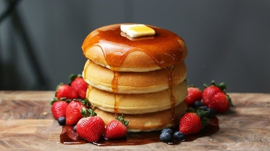
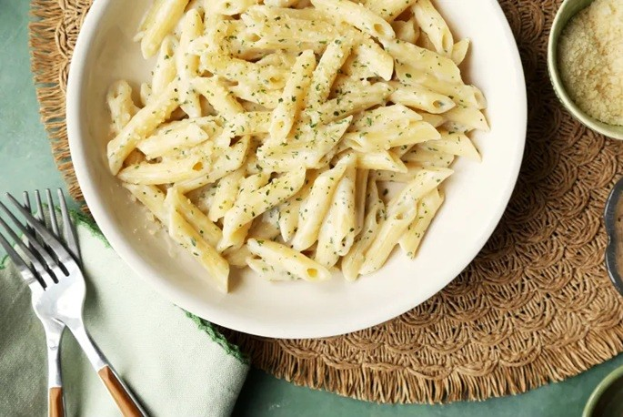

Fluffy Pancakes
Learn how to make delicious fluffy pancakes in just 15 minutes.

Learn how to make delicious fluffy pancakes in just 15 minutes.

A simple and creamy garlic pasta recipe that everyone will love.
Bake a rich and moist chocolate cake with this easy recipe.